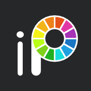

Aku mahasiswa Ilmu Komputer yang suka coba banyak hal. Kadang ngoding. Kadang desain. Kadang semuanya barengan.
Kadek Wahyu Ardia Putra
Aku paling gampang belajar kalau langsung bikin sesuatu. Rasa penasaran sering membawaku dari
Data Science dan AI ke UI/UX, karya visual, sampai proyek bareng tim.
Pengalaman organisasi dan leadership juga ngajarin satu hal: karya yang bagus jarang lahir sendirian. Biasanya ada proses dengar, coba, revisi, dan belajar kerja bareng orang lain.
SEDIKIT TENTANG DUNIA SAYA
Masih belajar. Masih bikin sesuatu.
Teknologi, seni, dan orang-orang di antaranya. Selalu ada sesuatu yang baru untuk dipelajari.
✳
BELAJAR. BANGUN. DESAIN. COBA LAGI.
WAHYUVERSE / TERUS BERTUMBUH
SEDANG DIEKSPLORASI
Geospatial · Data Analytics · AI · ML
Menghubungkan ide, teknologi, dan pengalaman manusia.
Software dan teknologi yang saya gunakan dalam pengembangan, analisis data, maupun desain visual.
HTML
CSS
JavaScript
UI/UX Design
Canva
Figma
Visual Studio Code
Google Sheets
Microsoft Excel
Microsoft Word
Adobe Illustrator

ibisPaint
Drawing
PERJALANAN BELAJAR
Tempat yang membentuk caraku belajar.
Dari sekolah dasar di Tianyar Barat sampai Ilmu Komputer di Undiksha.
SOFT SKILLS
Hal-hal yang tidak cocok masuk progress bar.
Terbentuk dari kelas, kepanitiaan, koordinasi, dan banyak percakapan dengan orang yang berbeda-beda.
HOBI YANG SELALU KUBALIKIN
Menggambar, pelan-pelan. Detail demi detail.
Di luar kode dan kegiatan kampus, aku cukup sering kembali ke pensil dan kertas. Menggambar jadi salah satu caraku menikmati bentuk, ekspresi, tekstur, dan detail-detail kecil.
Diberikan oleh Dicoding Academy atas kelulusan pada kelas Belajar Dasar Data Science. Memvalidasi pemahaman yang utuh terhadap konsep esensial pada proses analisis data.
Sertifikasi Global
IC3 GS6 Level 1
Sertifikasi kompetensi global yang membuktikan penguasaan terhadap pengetahuan esensial pada teknologi dasar, keamanan digital, komunikasi, hingga kolaborasi siber.
Event & Workshop
DevFest Bali 2025 & Cloud Workshop
Berpartisipasi dalam ajang Google Developer Group (GDG) Bali serta mendalami arsitektur infrastruktur self-hosting n8n di Google Cloud.